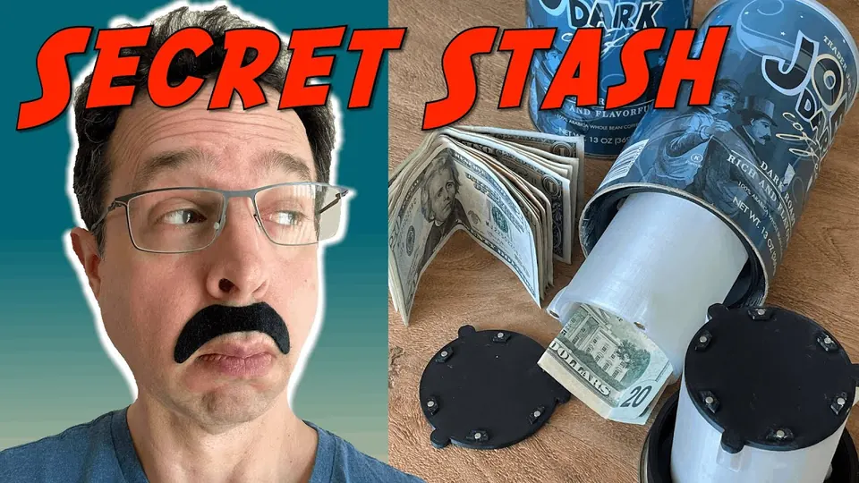

Fed Learns To Make Video: Coffee Can Secret Hiding Place Stash!
I build a secret stash to hide all my super-valuable stuff out of a Trader Joe's coffee can, 3D printed parts, insulating foam and lots of magnets. No one will suspect that this coffee can holds all your most cherish possessions! Amaze your friends! Confound your enemies!

Play video: Coffee Can Secret Hiding Place Stash -- Stash all your awesome stuff in this secret hiding place!Parts list (Amazon Affiliate Links):
6mmx2mm small magnets: —> https://amzn.to/3dhEByK
3mmx2mm tiny magnets: —> https://amzn.to/3w6tWha
Tecbears PLA Filament (Black): —> https://amzn.to/3xVCLeX
Geeetech PLA Filament (Clear): —> https://amzn.to/35YfLQC
Loctite Tite Foam Window and Door Sealant: —> https://amzn.to/3A6M2m8
E6000 Glue: —> https://amzn.to/3h5HN1C